Реальные примеры и инструменты
Теперь, когда вы много знаете о том, как работает Canvas, сделаем обзор некоторых хороших и полезных библиотек.
Графики и диаграммы
RGraph является бесплатной для личного использования Canvas-библиотекой для создания графиков. Она содержит множество разных видов диаграмм.
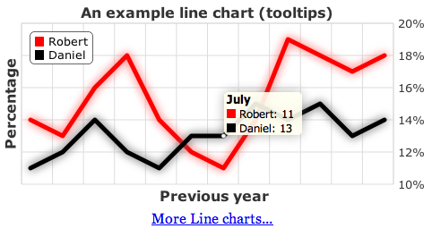
ZingChart это удалённая библиотека для графиков с визуальным билдером. Результат отображается в различных форматах, в том числе Canvas и может обрабатывать большие массивы данных.
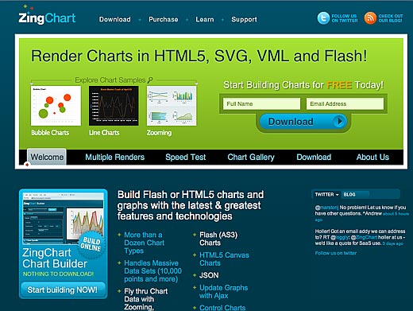
Игровые движки
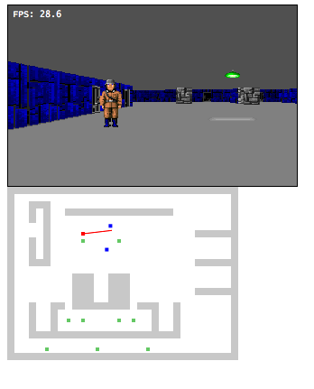
Wolfenstein 3D воссоздан на Canvas
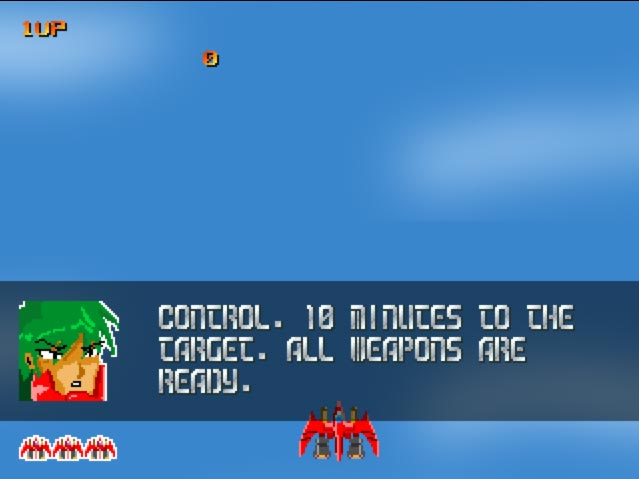
Akihabara
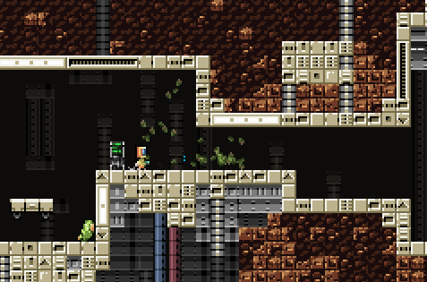
ImpactJS: быстрый коммерческий игровой движок
Cocos2d: частичный порт Cocos iPhone SDK на JavaScript.
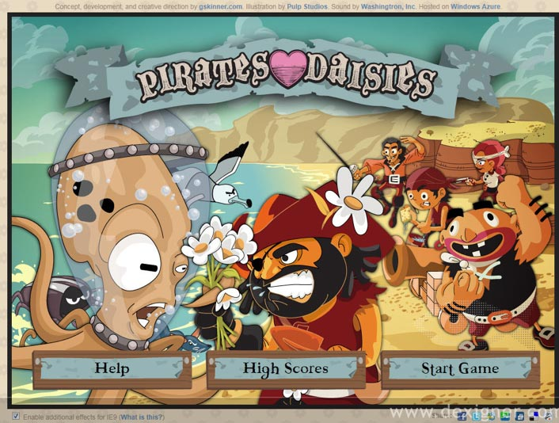
Pirates Love Daises — игра в жанре Tower Defense сделанная полностью на Canvas.
Программы рисования
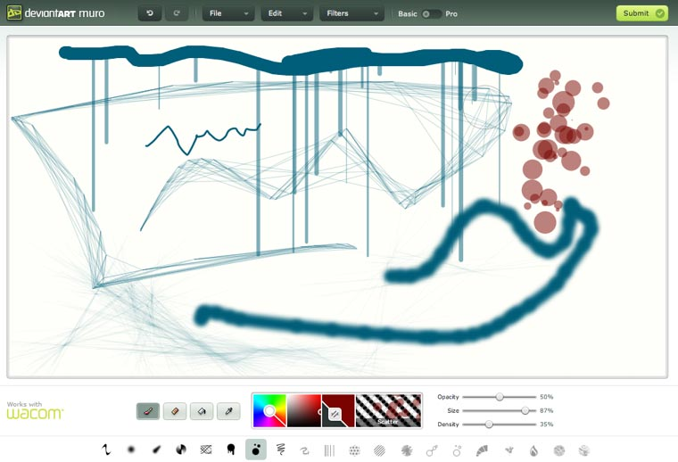
Muro: программа рисования на сайте от Deviant Art
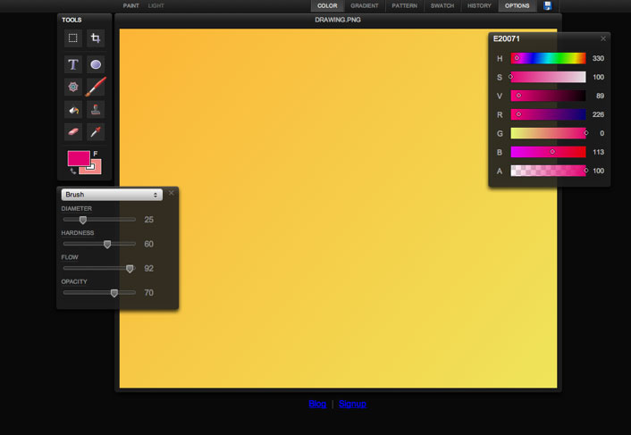
SketchPad: другая программа для рисования с классическим интерфейсом.
Пользовательские шрифты
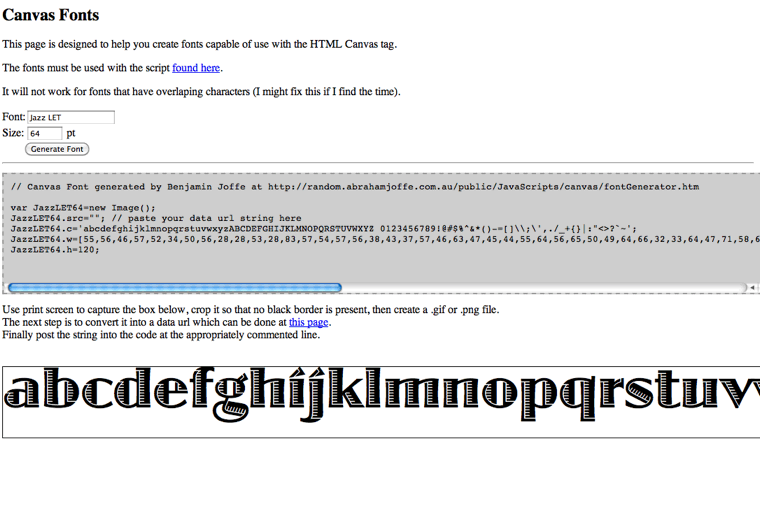
Скрипт для работы со шрифтами от Бена Иоффе. Преобразует шрифт на компьютере в изображение, которое может быть визуализировано через Canvas. Это позволяет использовать пользовательский шрифт на компьютерах, на котором шрифт фактически не установлен.
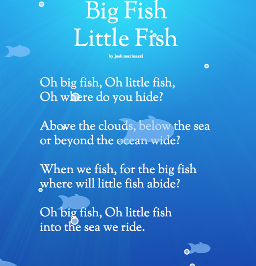
Холст, украшенный детским стихотворением. Текст и графика располагаются на прозрачном холсте.
Инструменты и библиотеки
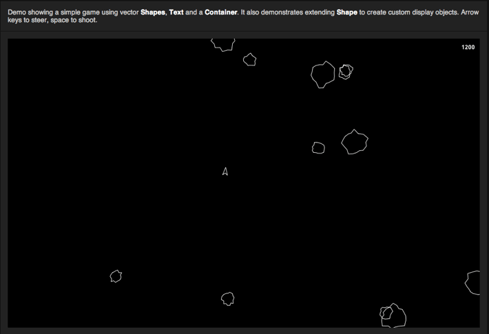
EaselJS: графическая библиотека на основе объекта display из Flash.
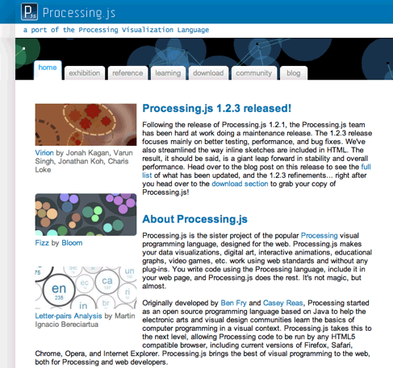
JavaScript порт графической библиотеки Java Processing. Отлично подходит для интерактивных дисплеев и изобразительного искусства.
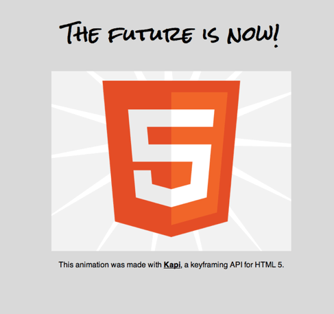
Kapi: JavaScript-библиотека работающая с ключевыми кадрами.
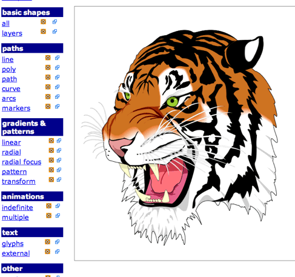
canvg: визуализация SVG созданная на Canvas.
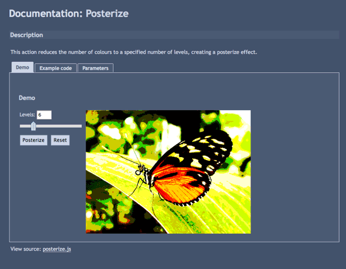
Pixastic — это редактор фото и библиотека обработки изображений. Содержит массу эффектов в стиле фильтров Фотошопа.
Визуальные инструменты
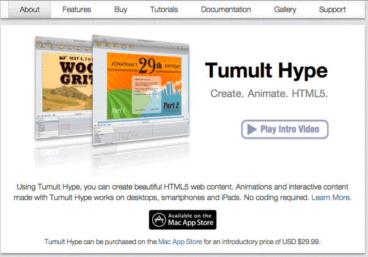
Hype от Tumultco — коммерческое инструмент для рисования и анимации который выводит напрямую в HTML5.
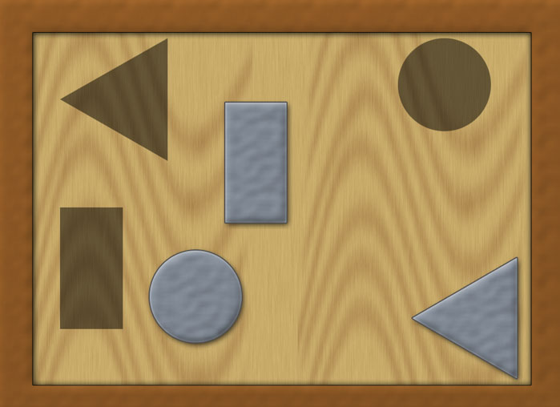
Amino: JavaScript and Java библиотека для работы со сценами.
https://github.com/joshmarinacci/aminolang
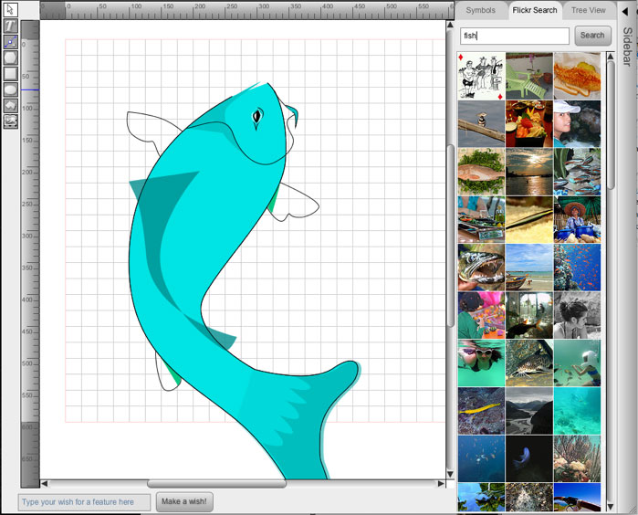
Leonardo Sketch: инструмент рисования с открытым исходным кодом, который выводит на холст код из других форматов. Инструмент расширяемый и содержит некоторые хорошо сделанные социальные фичи.

Все материалы сайта доступны по лицензии Creative Commons «Attribution-NonCommercial» («Атрибуция — Некоммерческое использование») 4.0 Всемирная, если не указано иное.